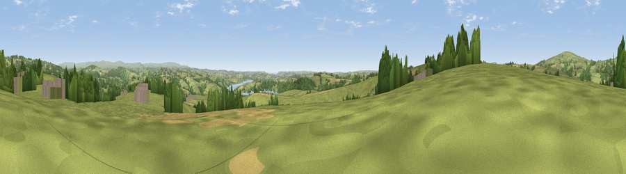

Viewpoint near St Dominic
#12518 in England · top 21% of its area beats it · near St DominicThe view, rendered

A 360° render of this exact spot computed from the terrain model, tree cover and land cover — summer colours, afternoon light, calibrated against photographs of famous viewpoints. Real trees, hedges and buildings will differ in detail.
The panorama
Grey silhouette: terrain skyline in each direction (720 bearings, Earth curvature and refraction included). Dashed green: skyline with trees (+15 m) and buildings (+8 m) as obstacles. Blue strip: how far the ground is visible on each bearing.
Where the view opens
Wedge length = distance to the farthest visible ground on that bearing (vegetation-aware). Rings at 10, 25 and 50 km.
What fills the view
68% grassland · 18% woodland · 10% cropland · 3% built-up · 1% water
Angular shares of the visible panorama (visual magnitude), not map area. Landscape diversity 0.42 (0–1 Shannon).
Key numbers
More beautiful places nearby
The staircase of upgrades: each row has a higher view potential than everything closer. Driving times are estimates from straight-line distance, calibrated against real road routing — check an actual route before setting out.
| Place | Direction | Drive | Score |
|---|---|---|---|
| Viewpoint near St Dominic | SW · 1 km | ~3 min | 60.6 |
| Viewpoint near St Mellion | W · 2 km | ~5 min | 62.4 |
| Viewpoint near St Mellion | S · 3 km | ~7 min | 67.3 |
| Viewpoint near St Ann's Chapel | N · 4 km | ~9 min | 73.5 |
| Hingston Down | N · 4 km | ~9 min | 78.3 |
| Kit Hill | NW · 5 km | ~11 min | 80.3 |
| Viewpoint near Crafthole | SSW · 14 km | ~25 min | 80.5 |
| Viewpoint near Crafthole | SSW · 14 km | ~26 min | 81.0 |
50.48435, -4.25351 · source: screening · position refined by local search. Computed location — check access rights before visiting.